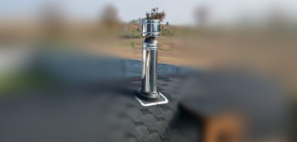
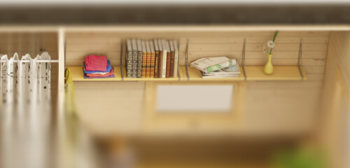

Двери
из массива дерева
Двери изготавливаются из остатков досок, которые сращиваются и склеиваются для придания им стабильности и прочности. Перед покраской двери обрабатываются специальным маслом и антисептиком

Сэндвич-
дымоход
Конструкция дымохода продумана таким образом, чтобы минимизировать попадание влаги и предотвратить стекание сажи. Соединения дымохода выполнены на нержавеющих клепках, чтобы обеспечить долговечность и предотвратить коррозию в местах швов.
Обручи
из нержавеющей стали
Наша компания занимается собственным производством уникальных обручей для бани из нержавеющей стали, что намного увеличивает срок службы бани-бочки

Функциональные
полки и столы
Большое количество полок помогают сделать пространство бани более функциональным. Полки обрабатываются антисептиком для бани и сауны и изготавливаются на отдельном производстве
Внешняя обработка
маслом
При создании бени используется специальный состав для обработки торцов древесины, чтобы предотвратить растрескивание и усыхание. Также внешние стены бани обрабатываются маслом.
Технология
“Лунный паз”
"лунный паз" – это часть профиля доски, которая обеспечивает надежное соединение элементов конструкции бани